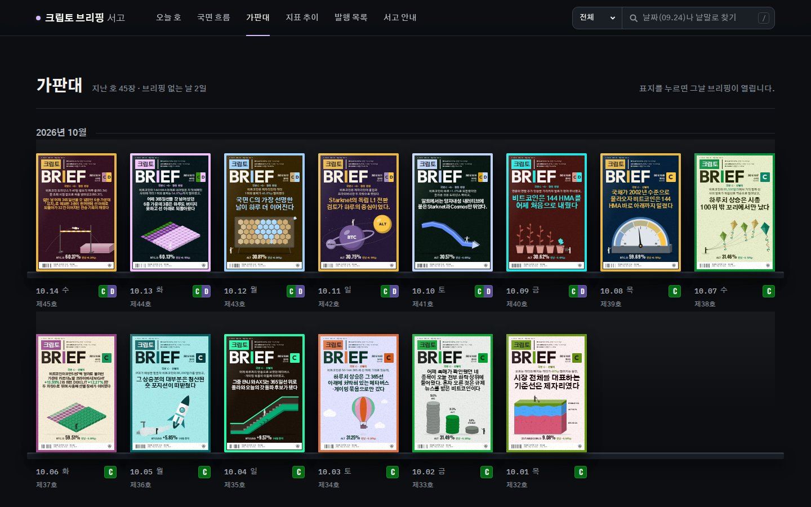
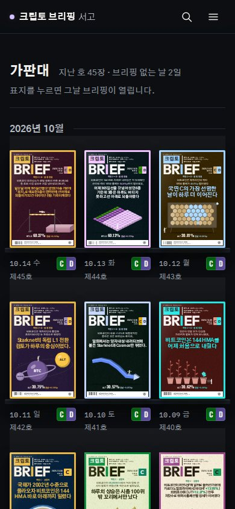
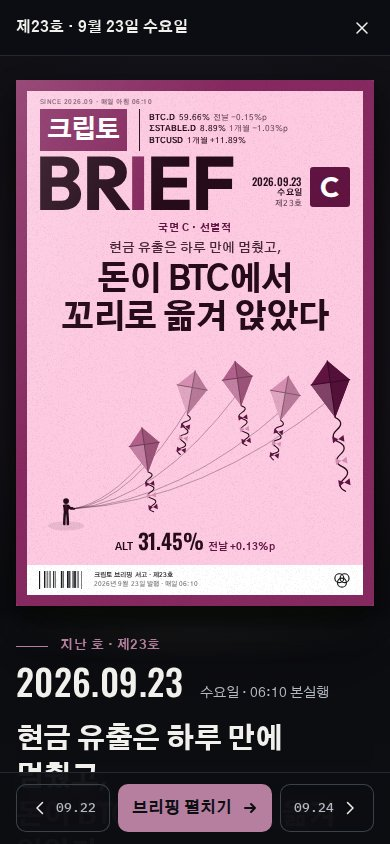
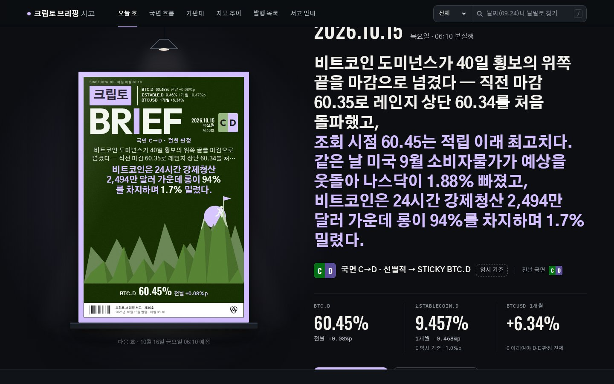
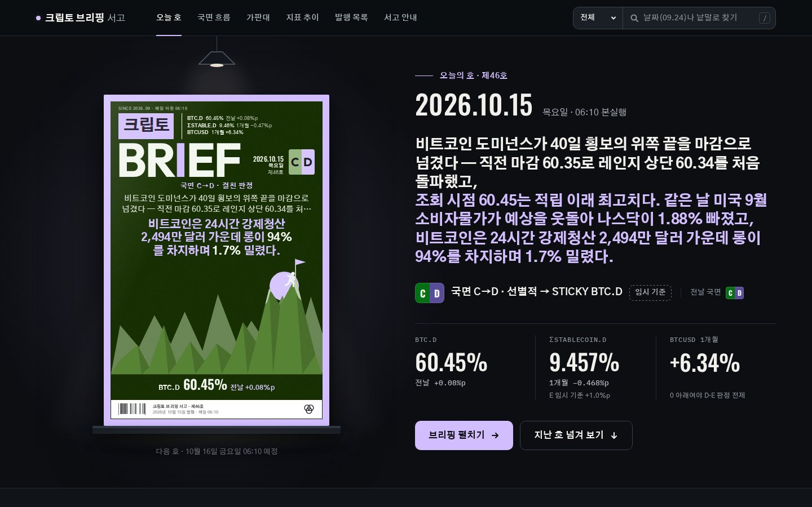

서고 열람 창 시안
가판대의 지난 호(9월 23일, 제23호)를 눌렀을 때 · 10월 15일 12시 데이터 사본
데스크톱 1440 × 900

지금표지를 누르면 새 탭에서 브리핑이 바로 열립니다.
시안 A · 오늘의 호처럼전등과 받침을 그대로 두고 표지 폭 400px
시안 B · 표지 크게전등 없이 창 높이에 맞춰 표지 폭 360~520px
휴대폰 390 × 844

지금
시안 A표지 240px

시안 B표지 358px
함께 고친 결함: 첫 화면 헤드라인이 길 때(10월 15일, 191자)

지금'오늘의 호 · 제46호'와 날짜가 위로 잘리고 '브리핑 펼치기' 단추가 아래로 잘립니다.

고친 뒤헤드라인을 26px까지 줄여 모든 줄이 첫 화면 안에 들어갑니다.